CISCO Configuring Static Routing
In networking, routing is the process of defining a path(s) for IP traffic. Imagine being an IP packet – you travel along a path and hit a router (or a device capable of routing). The router guides you where to go, either through a specific ‘route’ in its routing table or its ‘gateway of last resort’. We'll explore both terms in this guide.
Lab Setup
- GNS3 as the network emulation software.
- 2 PCs (Virtual PCs).
- 2x CISCO routers on IOSv 15.7 (Router - Cisco Modelling Labs Personal $199).
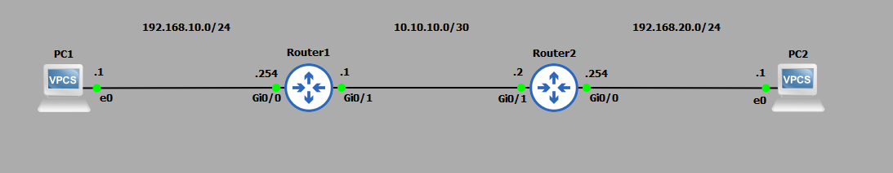
IP Schema
The IP schemas used in this lab are:
- 2x LAN subnets: 192.168.10.0/24 and 192.168.20.0/24.
- 1x Router-to-router subnet: 10.10.10.0/30.
IP Addressing Router Interfaces and Virtual PCs
Let's start by IP addressing the Virtual PCs:
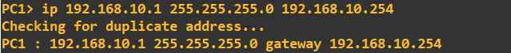
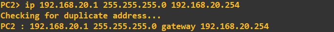
I'll address the router interfaces attached to these LANs. For simplicity, I have attached interface gi0/0 of each of the routers to the LAN. The address assigned to each interface is the last address in the subnet.
Router 1:
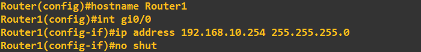
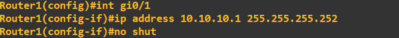
Router 2:
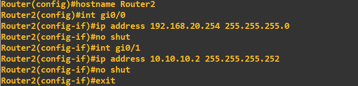
Let's check the basic connectivity. First, a ping from PC1 to router 1:
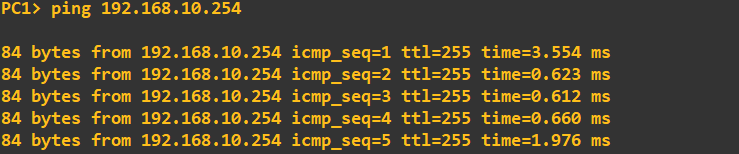
Now a ping from PC1 to PC2. This should fail as router 1 does not yet recognize the 192.168.20.0/24 network.
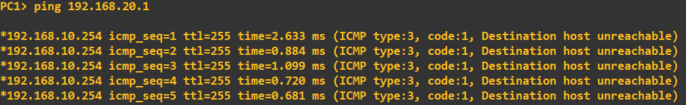
Next, we'll enable connectivity between these networks by adding static routes to router 1 and router 2.
Configuring Static Routes
When adding a route in one direction and expecting a return, such as with a ping, we need to configure a route back as well. We'll begin by adding a route to router 1, instructing it on how to access the 192.168.20.0/24 network. According to the topology, the path to the 192.168.20.0/24 network is via 10.10.10.2 (router 2's connected interface).
Remember to add a route back as well. We'll add a route back to the 192.168.10.0/24 network on router 2, specifying that to reach the 192.168.10.0/24 network, traffic should go via 10.10.10.1.
That is all we needed to do to enable connectivity between these two networks. We can check the routing table to see our static route: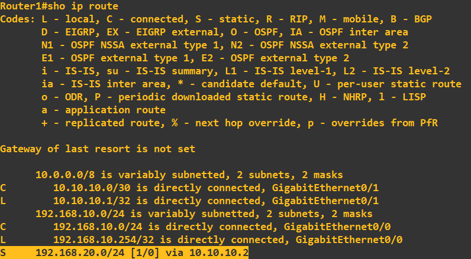
Notice the 'S'. This denotes a static route. I will now confirm connectivity with a ping check PC1 to PC2: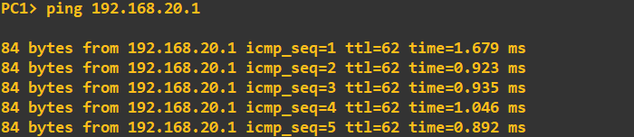
Success, connectivity has now been realised between these two networks.
Gateway of Last Resort
You may have noticed that when we looked at the routing table of router 1, there was a configuration called ‘gateway of last resort’: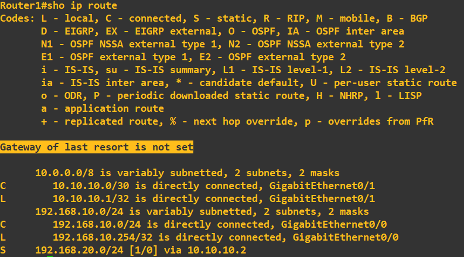
While this does not come under the banner of static routing, it does come under the overall term of routing. The gateway of last resort is basically saying 'send all here IP traffic here if there is no specificed static or dynamic routes for the IP packet in question'. This can be useful to set for devices that sit on the access layer and only have connected line. Using our topology, I will demonstrate its functionality on router 1. First, I will remove the static route to 192.168.20.0/24 and then configure the gateway of last resort to be 10.10.10.2: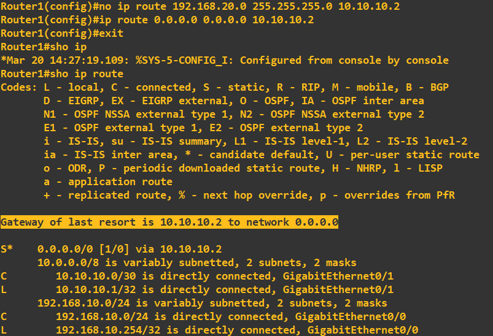
Line 2 in the above screenshot is assigning the gateway of last resort, this is basically saying 'all IP addresses (0.0.0.0.0), all subnets (0.0.0.0), send to 10.10.10.2'. In our topolgy this works well as it is only connected to a single router, this would work as a 'catch all' routing statement. Finally, lets check we have connectivity by pinging each way from PC1 to PC2: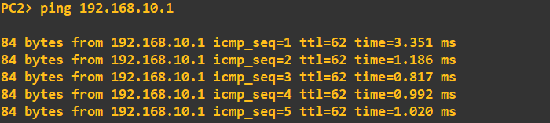
This concludes this guide, however, a point to note here. Static routing has its advantages (granular routing control, easy to configure on small networks) and disadvantages. The disadvantages being, picture this toplogy having 5+ routers and numerous networks attached. We would have to manually configure routes on every router - this would be cumbersome and in some cases impossible to maintain. To combat this we have dynamic routing, dynamic routing protocols propagate routes across routers automatically and continually update their routing tables. Check my other guides on how to configure some of the well-known dynamic routing protocols.